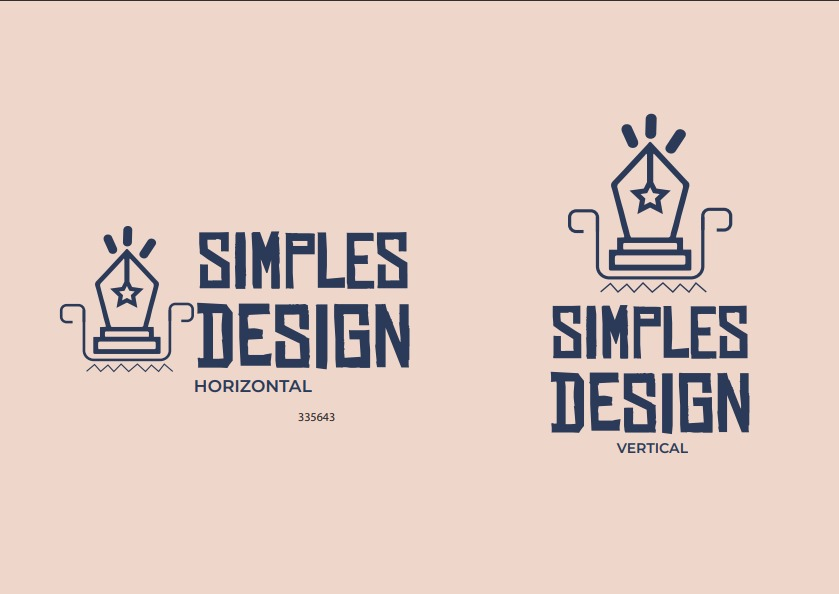
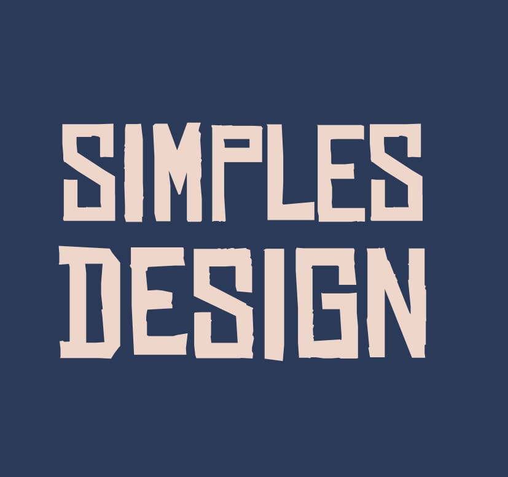
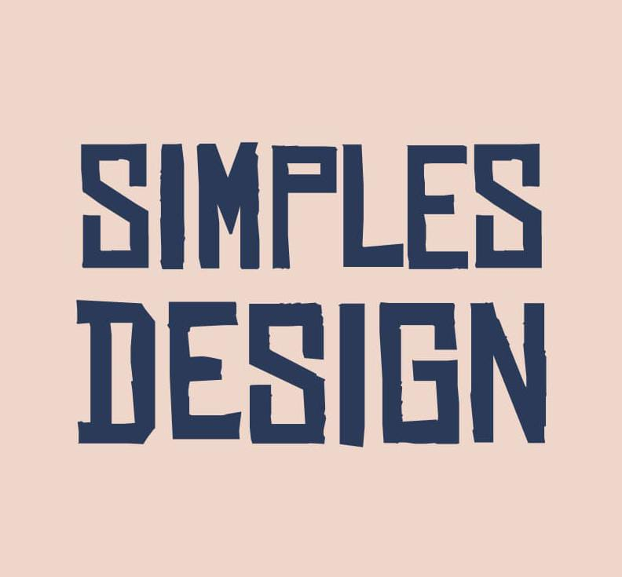
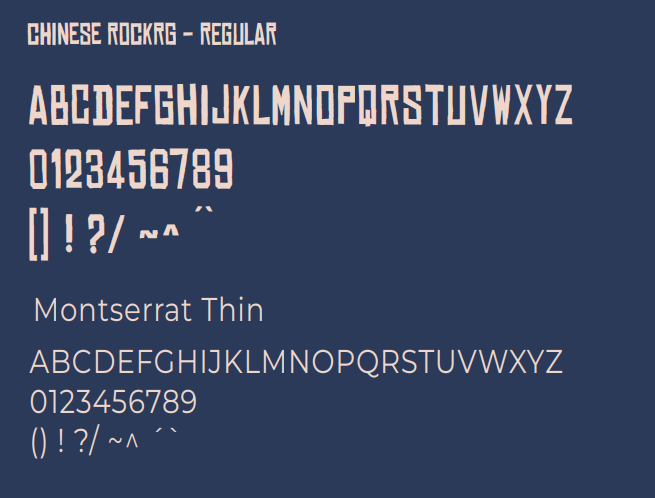
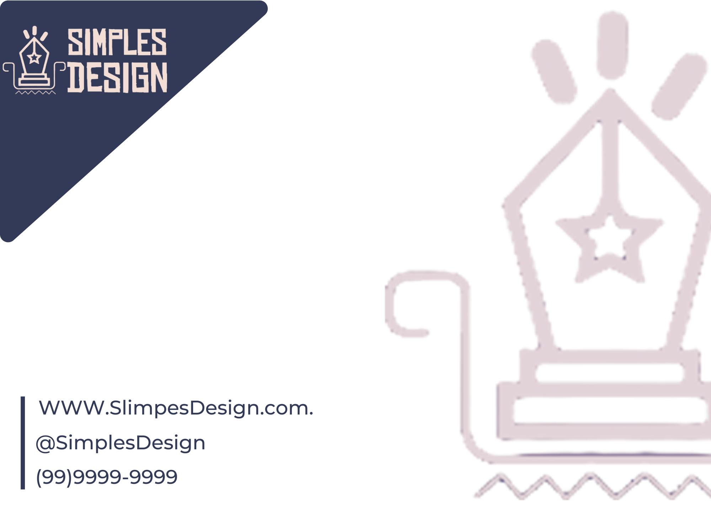
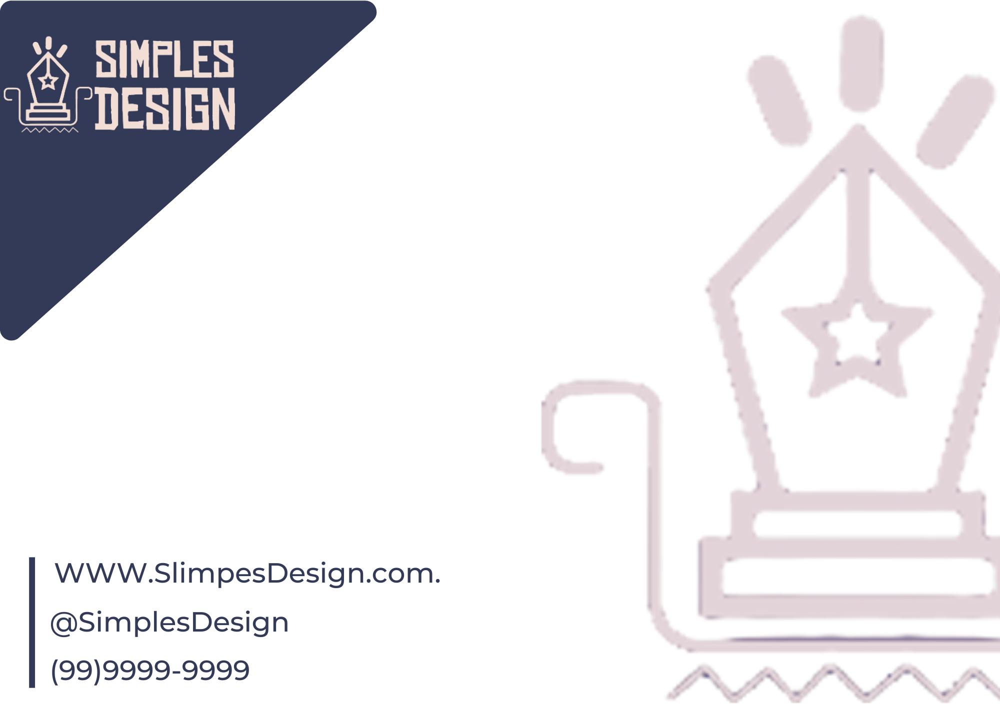
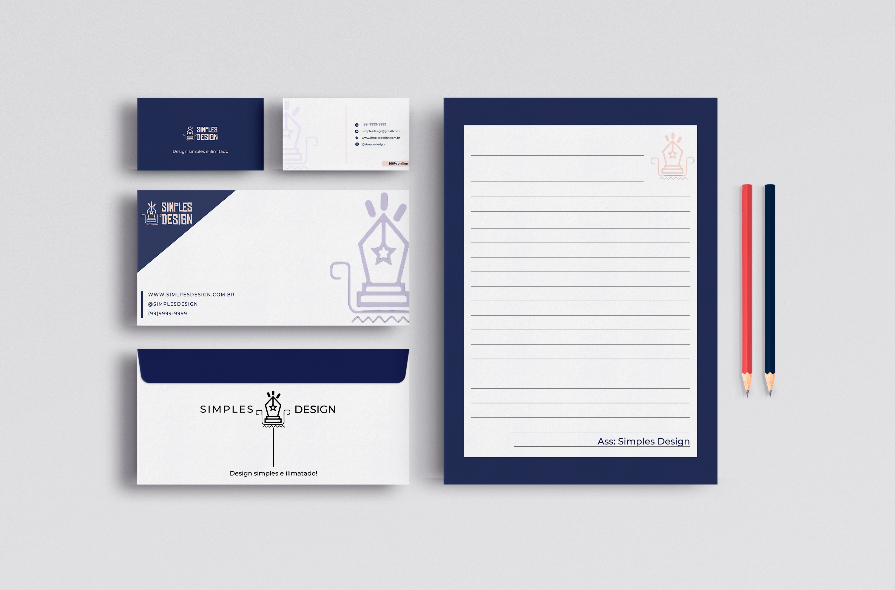
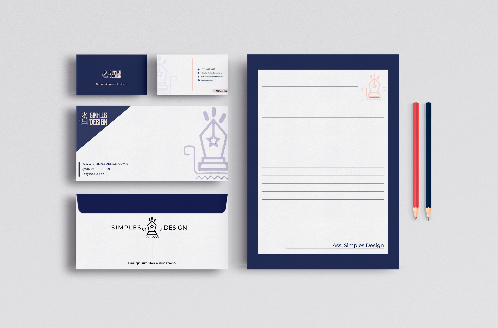

Marca
Apresentação tanto na orientação horizontal como na vertical.
A Simples Design é uma empresa jovem de educação, com foco direcionado ao ensino flexibilizado do design gráfico na Amazônia, cujo mercado é encontra-se em ascensão. A marca pretende ensinar o conteudo a respeito desse tema com uma metodolgia simples e que formente os avanços da área na região, capacitando cada vez mais profissionais
Padrão Cromático
cores em hexadecimal: #333a57
cores em RGB: R:51 G:58 B:87
cores em hexadecimal: #f2ded5
cores em RGB: R:242 G:222 B:213
Tipografia
Informações sobre a tipografia utilizada no seu projeto:
A fonte utilizada em nossa marca é a Chinese Rock , uma fonte estilizada com espessura regular, que aproxima dos traços retilíneos do artesanato marajoara, motivo pelo a qual foi a escolhida como tipografia oficial da nossa marca, pois comunica nossas origens e transmite personalidade com sua anatomia.
Papelaria e aplicações
.png)
 

.png)
.png)

.png) 

Aqui estão alguns modelos de papelaria básica aplicada.